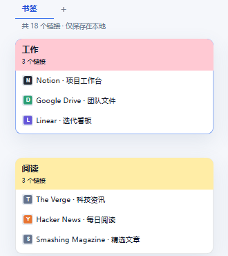
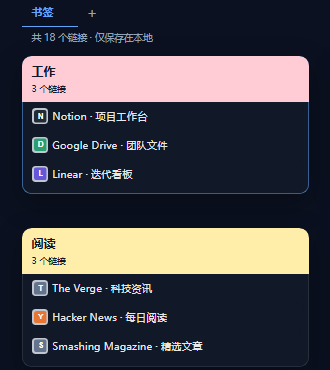
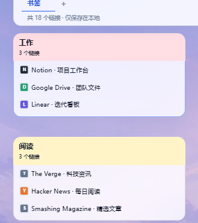

书签管理器 / 03
你的新标签页，你的风格。
同一个工作区，换一种好心情。

柔和 / 浅色
明亮清爽，开启一天的工作。

柔和 / 深色
柔和深色，让工作区安静下来。

毛玻璃 / 浅色
霜化卡片，搭配你喜欢的背景。
6 种界面风格自定义强调色内置壁纸与自选背景
让常用的页面，也合你心意同一个工作区，换一种好心情。

明亮清爽，开启一天的工作。

柔和深色，让工作区安静下来。

霜化卡片，搭配你喜欢的背景。